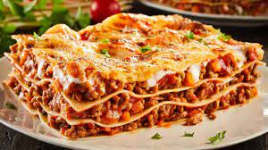

Lasagna

Homemade meat lasagna, traditional Italian recipe
Meat lasagna is one of the most traditional recipes that we have in Italian gastronomy, today I am going to teach you how to make the traditional Italian lasagna recipe, the one that I was taught when I lived in Italy.
This classic pasta recipe is made up of layers of pasta interspersed with a filling, usually meat, although we can also find vegetable lasagna, tuna lasagna or fish lasagna that is made in another recipe and includes a mixture of fish and seafood.
Ingridients:
- 500 grams of minced beef
- 200 grams of mortadella (optional, we can put bacon)
- 1 red bell pepper
- 1 green bell pepper
- 1 yellow bell pepper
- 1 spring onion
- lasagna sheets
- 200 ml of fried tomato
- 1 glass of white wine or red wine
- Grated cheese (I use pecorino which is great)
- Salt
- Black pepper
- Bechame sauce
HOW TO PREPARE MEAT LASAGNA
- We put the chopped onion together with the peppers to poach 10 or 15 minutes over low heat
- Once the vegetables are poached, add the minced meat and the minced mortadella.
- When the meat is half done, add the wine and let the alcohol evaporate. Next the homemade tomato sauce. You can perfectly use fried tomato sauce, but I always recommend homemade things, there are a lot of easy tomato sauce recipes on the internet for you to take a look at
- We make the bechamel on the other hand. Once done we can start assembling the lasagna.
- In a source we put bechamel in the bottom.
- Cover with the pasta sheets. These are from the barilla brand, we simply cover them with bechamel and in 30 minutes they will cook in the oven.
- Add the filling and add grated cheese. We repeat the operation to make another layer of lasagna.
- Cover with bechamel and grated cheese. Bake at 200º for 20 minutes. And then 3 more minutes to gratin.